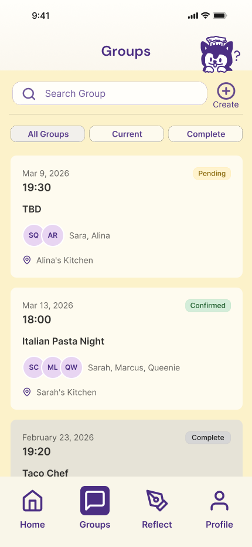
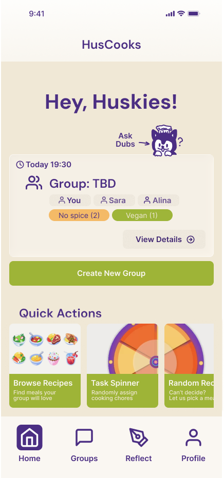
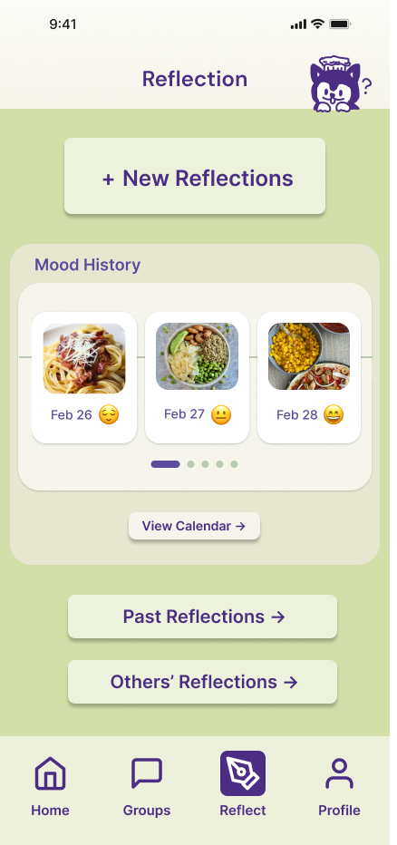

Illustrated by me
Cooking Coordination App
I illustrated this storyboard to explore how roommates could turn a shared cooking plan into a meal together.
 ‹ Back to Work
‹ Back to Work
01
Making shared cooking easier to coordinate.
HusCooks is a cooking coordination app for UW students living with roommates. Our research explored why students who wanted to cook together often found it easier to cook alone, leading us to develop a prototype that helps them turn a conversation about a shared meal into a plan.



I contributed to interviews and research synthesis before working with the team on prototyping and testing. I illustrated the Cooking Coordination App storyboard and designed the Reflection interface, with broader product decisions developed together as a team.
02
We conducted semi-structured interviews with four UW undergraduates living off campus with roommates to understand their cooking routines and experiences preparing meals together. Although participants valued shared cooking, the effort of coordinating a meal often made cooking alone the more convenient choice.
Participants described difficulty coordinating their schedules, which made finding a time to cook together a central requirement for the design.
Because cooking alone often felt simpler than organizing a group meal, we needed to consider whether each proposed feature reduced the planning effort or added another task.
Participants valued cooking as a way to spend time with roommates, so our concepts considered how to help them begin a shared meal and revisit the experience afterward.
How might we help roommates plan and coordinate shared meals without adding more work to their routines?
03
We drew storyboards separately before comparing three approaches: a cooking coordination app, a physical mood board, and an in-person cooking class. Looking at the scenarios together helped us consider how each approach would fit into roommates’ lives before developing the app concept further.
Illustrated by me
I illustrated this storyboard to explore how roommates could turn a shared cooking plan into a meal together.
Alternative concept
A shared physical tool for communicating schedules and readiness to cook.
Alternative concept
A hands-on approach to practicing cooking, communication, and teamwork.
We moved forward with the app concept because it could support coordination across different schedules and connect the steps before, during, and after cooking.
04
We developed our ideas through low-fidelity sketches and a mid-fidelity Figma prototype, then used concept testing, usability testing, and expert feedback to guide the high-fidelity design.
Two changes became especially important.
Our mid-fidelity prototype included Chat as a place to discuss cooking plans. Although usability testing and an expert review suggested making it easier to find, we also recognized that roommates already used other messaging apps and might have little reason to move those conversations.
Before — Mid-fi Chat

After — High-fi Groups
We therefore replaced Chat with Group Scheduling in the high-fidelity prototype, giving roommates a place to view upcoming sessions and check who was participating after discussing the meal elsewhere.
My contribution
I designed Reflection to help roommates revisit their cooking experiences, initially using a line chart to show mood history. Concept testing revealed that this view was unclear, and later feedback suggested using emojis.
Before — Mid-fi Reflection

After — High-fi Reflection
In the final prototype, I connected each reflection to food photos, dates, and emoji mood indicators so readers could refer back to a particular meal. Working on the revision made me reconsider what the page needed to help people remember, since a chart of change over time offered a different kind of information from a photo and mood attached to one evening.
05
The final prototype follows a short path: Home to find a meal, Groups to coordinate with roommates, and Reflection afterward.
The project ended at the prototype stage. Testing helped us improve the interface and reconsider the feature set, but we did not measure whether HusCooks changed roommates' cooking habits over time.
HusCooks high-fidelity prototype walkthrough, presented during our in-class gallery walk.
HusCooks taught me to consider a feature within the routine it would enter. Chat seemed useful when we looked at the app on its own, but roommates already had ways to communicate, and our design needed to account for that. In Reflection, seeing others struggle with a chart I understood well reminded me how much familiarity could shape my judgment.
If I continued the project, I would follow roommate groups over several cooking sessions to observe whether they returned to Groups to check their plans and found a reason to revisit Reflection afterward. Their use over time would help us decide which parts of the app were worth developing and which still asked too much of them.